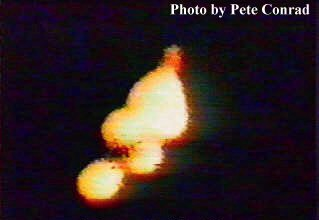

Conrad, Gordon, Bean
Apollo 12 November 14, 1969
On day out on the earth moon leg of the trip the astronauts radioed Mission Control that two flashing lights had appeared off the bow. of their capsule. After rejecting the possibility that the objects could be spinning pieces of the Apollo booster rocket the capcom suggested that they could be the jettisoned protective panels. One of the astronauts replied " Gee that could be, but one of those lights just shot out of here at tremendous speed ".
James Oberg writes concerning this the following explaination which certainly sounds reasonable;
Take the Apollo 12 case. In this famous incident the initial reports are indeed true, as the astronauts jokingly asked the earth about some flashing lights. When told that they were probably tumbling pieces of space debris (which do in fact accompany the Apollo in the vacuum of space on the way to the moon), the crew accepted this and began discussing how far away they would be. When asked how fast the pieces had broken off the rocket the previous day, the astronauts replied that when they had turned their Apollo around some pieces were flying off at a very fast velocity. That had been the day before! The flashing lights out the window didn't go anywhere but gradually faded out as the day went by. What happened was that UFO researchers ( I use the term loosely) had simply misunderstood the space jargon and had completely missed the gist of the conversation from Apollo, and had then (probably quite honestly, with good intentions and closed minds) reworded the phrases to make them "clearer" to the general public. In fact they had totally altered the meaning.
In this incident it should be trivial to get to the root of the matter. All we need is the tape of the actual conversation or the true unaltered transcript. We could then see if Olberg is right on the money or not.
During the flight of Gemini XI September 12, 1966 (Richard Gordon, Charles Conrad), A long object was reportedly observed over Madagascar. NORAD indicated that it was Soviet PROTON 3 but it turns out that that satellite would have been over 350 miles away at the time of observation.(Bruce Maccabee). Three pictures of the object were taken which enlarged have been widely publicized. The pictures are fuzzy and don't look at all like what the astronaughts described having seen with their eyesight;
